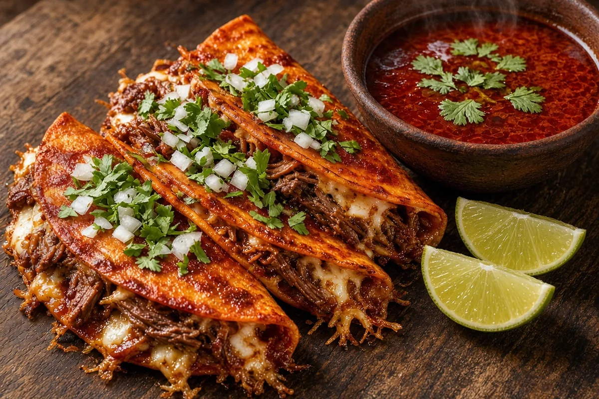

Beef Birria Tacos
Chuck and bone-in short ribs simmered in a guajillo consommé until the beef shreds and the broth turns deep red. The meat is tucked into corn tortillas with melting cheese, dipped in the red fat, fried crisp, and served with a cup of consommé for dunking. A weekend cook, about 4 1/2 to 5 hours.

By
Yield: 8 servings
Prep:
Cook:
Total:
Difficulty: Weekend
Ingredients
- 4 lb chuck roast, cut into 4 large chunks
- 2 lb bone-in beef short ribs (back ribs are fine)
- 8 dried guajillo chiles
- 2 large white onions (1 for the braise, 1 diced for garnish)
- 1 garlic bulb
- 1 large carrot
- 7-8 cups hot water
- 5 dried bay leaves
- 3 Tbsp granulated chicken bouillon (or 1 1/2 Tbsp Better Than Bouillon)
- 1-2 tsp chili powder
- 1 tsp Mexican oregano
- 1 tsp ground cumin
- 1 tsp kosher salt, used only at the end if needed
- 14-16 white corn tortillas, plus a few extras
- 2 cups shredded Mexican quesadilla cheese or Oaxaca (Monterey Jack is a fine stand-in)
- 1 bunch cilantro
- 2 limes
- 2-3 dried chiles de árbol, optional, for heat
Instructions
- Cut the chuck roast into 4 large chunks and pat the chuck roast and bone-in beef short ribs dry. Leave the short ribs on the bone. Peel 1 white onion and cut it in half crosswise. Cut the carrot into 4 large pieces. Slice the narrow top off the garlic bulb and leave the peel on. Dice the second white onion for garnish, chop the cilantro, cut the limes into wedges, and shred the quesadilla cheese if needed. Heat 7-8 cups of water until hot.
- Stem the guajillo chiles, slit them open, and shake out the seeds and veins. Wash your hands. Toast the guajillo chiles in a dry HexClad skillet over medium heat, 15-30 seconds per side, until they smell raisiny and turn a shade darker, not black. If using chiles de árbol, toast those too.
- Load an 8-qt or larger HexClad pot with the chuck roast, short ribs, onion halves, garlic bulb, carrot, bay leaves, and toasted guajillo chiles. Pour in 7-8 cups hot water, enough to just cover the meat, leaving at least an inch of headroom. If the meat is not covered, add a little more hot water until it is.
- Stir in the chicken bouillon, Mexican oregano, and ground cumin. Do not add the chili powder or kosher salt yet. Bring the pot to a boil over high heat.
- As soon as it boils, drop the heat to a gentle simmer with small bubbles, not a rolling boil. Set a timer for 30 minutes.
- After 30 minutes, skim only the gray foamy scum off the top. Leave the red fat where it is.
- Fish out the softened guajillo chiles, onion, garlic bulb, and carrot; leave the meat and bay leaves in the pot. Squeeze the soft garlic cloves out of the bulb into a blender and add the guajillo chiles, onion, and carrot. Blend until completely smooth, adding up to 1/4 cup of the broth if the blender needs help. The puree is ready when it is silky, with no visible chile pieces.
- Pour the puree through a fine-mesh strainer back into the pot, pushing it through with a spoon, and discard the skins left behind. Skip the strainer only if a high-powered blender has already made it completely smooth. Stir until the broth is even and brick-red.
- Stir in 1 tsp chili powder for color. Cover the pot and keep it at a gentle simmer.
- Simmer covered for about 3 hours, lifting the lid to stir every 40 minutes so nothing sticks. If the liquid drops below the meat, add a splash of hot water. The beef is done when a fork slides into the chuck roast and the meat shreds with almost no pull, and an instant-read thermometer in the center of a chuck chunk reads 200-205°F.
- Taste the consommé. Add kosher salt only if it needs it, starting with 1/2 tsp, because the chicken bouillon is already salty. Add the second teaspoon of chili powder only if the broth looks pale or tastes flat.
- Turn off the heat. Fish out the bay leaves and any loose bones. Let the pot sit 5-10 minutes so the red fat rises, then ladle that fat into a small skillet or bowl. Save all of it for frying. Leave a little fat in the consommé for flavor and sheen.
- Lift the meat onto a board. Discard bones and obvious gristle. For the tacos, finely chop or shred the meat, then stir in 2-3 spoonfuls of consommé so it stays juicy. Keep the remaining consommé on low heat.
- Warm the white corn tortillas so they do not crack: wrap a stack in a damp towel and microwave 30-45 seconds, or flick each one on a hot dry skillet until steamy and flexible.
- Heat a HexClad skillet or griddle over medium heat. The reserved red fat should sizzle gently when a drop hits the pan, not smoke. If you are short on fat, keep a thin film of it in the skillet.
- Dip both sides of a tortilla in the reserved red fat and lay it in the skillet. Add about 1/4 cup meat and about 2 Tbsp quesadilla cheese on one half, fold, and press with a spatula. Cook 2-3 minutes, until the underside is deep red-gold and crisp at the edges. Flip and cook 1-2 minutes more, until the second side is crisp, the cheese is melted, and any cheese that leaked is lacy and golden. Spoon on a little more fat if the tortilla looks pale.
- Move finished tacos to a rack or sheet pan and let them sit a minute, because they will be molten-hot. Repeat in batches so the pan is not crowded. Top with diced onion and cilantro, add lime wedges on the side, and serve a small bowl of hot consommé for dipping, also topped with onion and cilantro and a squeeze of lime.
Notes: Serve with cilantro-lime rice and Mexican street corn. This batch makes about 14-16 tacos (8 servings) and almost always leaves extra meat. Cool leftover meat submerged in the consommé; it keeps up to 4 days in the fridge or 3 months in the freezer. The solid fat cap on chilled consommé is the best fat for the next taco round. Reheat gently until the meat is hot and the broth is steaming; do not boil it hard. For a 6:15 PM dinner, start by 2:00 PM: prep and bring the pot to a boil, start the gentle simmer around 2:20, skim and blend the chile puree at 2:50, stir every 40 minutes, check doneness around 5:50 PM (fork-tender and 200-205°F), then save the fat, chop the meat, and fry the tacos. After the puree is back in the pot, you can move the covered pot to a 325°F oven for about 3 hours instead of simmering on the stove; check doneness the same way.